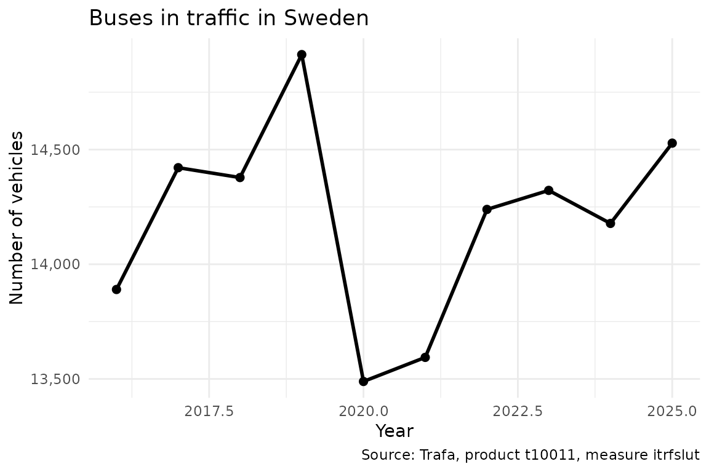

This vignette provides a quick start guide to get up and running with rTrafa as fast as possible. For a more comprehensive introduction, see Introduction to rTrafa.
install.packages("rTrafa")In this guide we walk you through five steps to discover products, explore their structure, download data and visualise it.
Trafa’s data is organised in three layers: Product (a statistical domain, e.g. “Buses”), Measure (what is measured, e.g. “Vehicles in traffic”), and Dimension (how to filter, e.g. year, fuel type). To download data you specify a product, a measure, and optionally dimension filters.
1. Get products
Trafa publishes dozens of statistical products. Start by listing them:
products <- get_products()
dplyr::glimpse(products)
#> Rows: 56
#> Columns: 5
#> $ name <chr> "t10011", "t10014", "t10015", "t10017", "t10018", "t10019"…
#> $ label <chr> "Bussar", "Motorcyklar", "Mopeder klass I", "Släpvagnar", …
#> $ description <chr> "", "", "", "", "", "", "", "", "Bussar\n\nDefinitioner-> …
#> $ id <int> 203, 206, 207, 209, 210, 211, 222, 227, 231, 232, 233, 234…
#> $ active_from <chr> "2019-01-10T10:17:00", "2019-01-10T10:25:00", "2019-01-10T…Use product_search() to filter by text:
products |>
product_search("Bussar") |>
product_describe(max_n = 3)
#> ── t10011: Bussar ───────────────────────────────────────────────────────────────
#> Active from: 2019-01-10T10:17:00
#>
#> ── t10091: Bussar ───────────────────────────────────────────────────────────────
#> Description: Bussar
#>
#> Definitioner-> Bussklass: För fordon som är inrättade för befordran av fler än 22 passagerare utöver föraren finns följande fordonsklasser: Klass I – Fordon som tillverkats med utrymmen för ståplatspassagerare för att medge frekventa förflyttningar av passagerare. Klass II – Fordon som huvudsakligen tillverkats för befordran av sittplatspassagerare och som är utformade för att medge befordran av ståplatspassagerare i mittgången och/eller i ett utrymme som inte är större än att det utrymme som upptas för två dubbelsäten. Klass III – Fordon som uteslutande tillverkats för befordran av sittplatspassagerare. För fordon som är inrättande för befordran av högst 22 passagerare utöver föraren finns följande fordonsklasser: Klass A – Fordon utformade för befordran av ståplatspassagerare. Ett fordon i denna klass är utrustat med säten och ska ha utrymme för ståplatspassagerare. Klass B – Fordon som inte är utformade för befordran av ståplatspassagerare. Ett fordon i denna klass saknar utrymme för ståplatspassagerare.
#> Active from: 2019-04-29T11:00:00
#>
#> ── t10021: Bussar ───────────────────────────────────────────────────────────────
#> Active from: 2020-05-08T12:59:002. Explore measures
Each product has several measures (KPIs). Let’s see what’s available for Buses (t10011):
measures <- get_measures("t10011")
measures |> measure_describe()
#> ── itrfslut (Antal i trafik) ────────────────────────────────────────────────────
#> Product: t10011
#> Description: Avser i slutet av perioden
#>
#> ── avstslut (Antal avställda) ───────────────────────────────────────────────────
#> Product: t10011
#> Description: Avser i slutet av perioden
#>
#> ── nyregunder (Antal nyregistreringar) ──────────────────────────────────────────
#> Product: t10011
#> Description: Avser under perioden
#>
#> ── avregunder (Antal avregistreringar) ──────────────────────────────────────────
#> Product: t10011
#> Description: Avser under perioden3. Explore dimensions
Dimensions are the variables you can filter on. Use
get_dimensions() to discover them:
dims <- get_dimensions("t10011")
dims |> dimension_describe()
#> ── ar (År) ──────────────────────────────────────────────────────────────────────
#> Data type: Time
#> Selectable: Yes
#> Values (25): 2001 = 2001, 2002 = 2002, 2003 = 2003, 2004 = 2004, 2005 = 2005 ... and 20 more
#> Filters: senaste = Senaste, forra = Föregående
#>
#> ── avregform (Avregistreringsorsak) ─────────────────────────────────────────────
#> Selectable: Yes
#> Values (2): 20 = Utförda ur landet, t1 = Totalt
#>
#> ── dimpo (Direkt import) ────────────────────────────────────────────────────────
#> Selectable: Yes
#> Values (2): 10 = Direkt import, t1 = Totalt
#>
#> ── leasing (Leasing) ────────────────────────────────────────────────────────────
#> Selectable: Yes
#> Values (2): 30 = Leasade, t1 = Totalt
#>
#> ── bussklass (Bussklass) ────────────────────────────────────────────────────────
#> Description: Bussklasser enligt föreskrift nr 107 UNECE
#> Selectable: Yes
#> Values (7): 1 = A, 2 = B, 3 = I, 4 = II, 5 = III ... and 2 more
#>
#> ── drivm (Drivmedel) ────────────────────────────────────────────────────────────
#> Selectable: Yes
#> Values (10): 101 = Bensin, 102 = Diesel, 103 = El, 104 = Elhybrid, 105 = Laddhybrid ... and 5 more
#>
#> ── pass (Antal passagerare) ─────────────────────────────────────────────────────
#> Selectable: Yes
#> Values (12): 101 = – 20, 102 = 21 – 40, 103 = 41 – 50, 104 = 51 – 60, 105 = 61 – 70 ... and 7 more
#>
#> ── agarkat (Ägarkategori) [agare] ──────────────────────────────────────────────
#> Selectable: Yes
#> Values (3): 10 = Fysisk person, 20 = Juridisk person, t1 = Totalt
#>
#> ── tillst (Tillstånd) [agare] ──────────────────────────────────────────────────
#> Selectable: Yes
#> Values (3): 1 = Yrkesmässig trafik, 2 = Firmabilstrafik, t1 = TotaltNotice that some dimensions belong to a hierarchy (shown in brackets). These are grouped conceptually but each is queried independently.
You can inspect the available values for any dimension:
ar_vals <- dimension_values(dims, "ar")
ar_vals
#> # A tibble: 27 × 3
#> name label type
#> <chr> <chr> <chr>
#> 1 senaste Senaste filter
#> 2 forra Föregående filter
#> 3 2001 2001 value
#> 4 2002 2002 value
#> 5 2003 2003 value
#> 6 2004 2004 value
#> 7 2005 2005 value
#> 8 2006 2006 value
#> 9 2007 2007 value
#> 10 2008 2008 value
#> # ℹ 17 more rowsNote the type column: "filter" entries like
senaste (latest) and forra (previous) are
shortcuts that the API resolves dynamically.
4. Get data
Now let’s fetch data. We request the number of buses in traffic for the last 10 years:
bus_data <- get_data("t10011", "itrfslut",
ar = as.character(2016:2025)
)
dplyr::glimpse(bus_data)
#> Rows: 10
#> Columns: 3
#> $ ar <chr> "2016", "2017", "2018", "2019", "2020", "2021", "2022", "2023…
#> $ ar_label <chr> "2016", "2017", "2018", "2019", "2020", "2021", "2022", "2023…
#> $ itrfslut <dbl> 13890, 14421, 14378, 14914, 13489, 13594, 14239, 14322, 14178…5. Visualise
Note how we convert the ar column to a proper
Date before plotting. Trafa returns ar as a
character column ("2016", "2017", …), and
plotting it as an integer can produce awkward ggplot2
breaks like 2020, 2022.5, 2025. Wrapping it in
as.Date(paste0(ar, "-01-01")) lets
scale_x_date() place tick marks on whole years — a pattern
worth reusing for any time-series analysis.
library("ggplot2")
bus_plot <- bus_data |>
dplyr::mutate(year = as.Date(paste0(ar, "-01-01")))
ggplot(bus_plot, aes(x = year, y = itrfslut)) +
geom_line(linewidth = 1) +
geom_point(size = 2) +
scale_x_date(date_breaks = "1 year", date_labels = "%Y") +
scale_y_continuous(labels = scales::comma) +
labs(
title = "Buses in traffic in Sweden",
x = "Year",
y = "Number of vehicles",
caption = data_legend(bus_data)
) +
theme_minimal()
Next steps
-
Deeper walkthrough —
vignette("introduction-to-rtrafa")covers the full data model, hierarchies, filter shortcuts, and dimension validation. -
Filter shortcuts — Use
ar = "senaste"to always get the latest year without hardcoding.